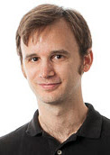

Tristan Glatard
Welcome
Contact
Publications
Teaching (Winter 2017):


Welcome
I am Assistant Professor at the Department of Computer-Science and Software Engineering and member of the PERFORM centre and Data Science Research Centre at Concordia University in Montreal. Before, I was Researcher at the French National Center for Scientific Research and Visiting Scholar at McGill University.
My research goal is to build platforms for the efficient and automated processing of Big Data. The main applications of my work are in medical image analysis, in particular neuroimaging.
Contact information
Tristan Glatard
Faculty of Engineering and Computer Science
Department of Computer Science and Software Engineering
Concordia University
1455 De Maisonneuve Blvd. W., Montreal, Quebec, Canada H3G 1M8
Office: EV 6.225
tristan.glatard@concordia.ca
Publications
Journal papers
2017
-
Best practices in data analysis and sharing in
neuroimaging using MRI
Thomas E Nichols, Samir Das, Simon B Eickhoff, Alan C Evans, Tristan Glatard, Michael Hanke, Nikolaus Kriegeskorte, Michael P Milham, Russell A Poldrack, Jean-Baptiste Poline, Erika Proal, Bertrand Thirion, David C Van Essen, Tonya White & B T Thomas Yeo,
Nature Neuroscience 20, 299-303 (2017). -
 Software architectures to integrate workflow engines in science gateways
Software architectures to integrate workflow engines in science gateways
Tristan Glatard, Marc-Étienne Rousseau, Sorina Camarasu-Pop, Reza Adalat, Natacha Beck, Samir Das, Rafael Ferreira da Silva, Najmeh Khalili-Mahani, Vladimir Korkhov, Pierre-Olivier Quirion, Pierre Rioux, Sı́lvia D. Olabarriaga, Pierre Bellec, Alan C. Evans,
Future Generation Computer Systems, accepted on January 7, 2017. -
Cyberinfrastructure for Open Science at the
Montreal Neurological Institute
S. Das, T. Glatard, C. Rogers, J. Saigle, S. Paiva, L. MacIntyre, M. Safi-Harab, M.-E. Rousseau, J. Stirling, N. Khalili-Mahani, D. MacFarlane, P. Kostopoulos, P. Rioux, C. Madjar, X. Lecours-Boucher, S. Vanamala, R. Adalat, Z. Mohaddes, V. S. Fonov, S. Milot, I.R. Leppert, C., T. M Durcan, T. Campbell, J. Moreau, A. Dagher, D L. Collins, J. Karamchandani, A. Bar-Or, E. A Fon, R. Hoge, S. Baillet, G. Rouleau, A. C. Evans,
Frontiers in Neuroinformatics, 06 January 2017. -
Sharing brain mapping statistical results with
the neuroimaging data model
Camille Maumet, Tibor Auer, Alexander Bowring, Gang Chen, Samir Das, Guillaume Flandin, Satrajit Ghosh, Tristan Glatard, Krzysztof J. Gorgolewski, Karl G. Helmer, Mark Jenkinson, David B. Keator, B. Nolan Nichols, Jean-Baptiste Poline, Richard Reynolds, Vanessa Sochat, Jessica Turner & Thomas E. Nichols
Scientific Data 3, Nature Publishing Group, Article number: 160102 (2016). -
The brain imaging data structure, a format
for organizing and describing outputs of neuroimaging
experiments
K. J. Gorgolewski, T. Auer, V. D. Calhoun, R. C. Craddock, S. Das, E. P. Duff, G. Flandin, S. S. Ghosh, T. Glatard, Y. O. Halchenko, D. A. Handwerker, M. Hanke, D. Keator, X. Li, Z. Michael, C. Maumet, B. N. Nichols, T. E. Nichols, J. Pellman, J.-B. Poline, A. Rokem, G. Schaefer, V. Sochat, W. Triplett, J. A. Turner, G. & R. A. Poldrack,
Scientific Data 3, Nature Publishing Group, June 2016. -
Combining Analytical Modeling, Realistic Simulation and
Real Experimentation for the Optimization of Monte-Carlo
Applications on the European Grid Infrastructure
S. Camarasu-Pop, T. Glatard, and H. Benoit-Cattin,
Future Generation Computer Systems, vol. 57, April 2016. -
The MNI data-sharing and processing
ecosystem,
S. Das, T. Glatard, L. C. MacIntyre, C. Madjar, C. Rogers, M. Rousseau, P. Rioux, D. MacFarlane, Z. Mohaddes, R. Gnanasekaran, C. Makowski, P. Kostopoulos, R. Adalat, N. Khalili-Mahani, G. Niso, J. T. Moreau, A. C. Evans,
Neuroimage, vol. 124-B, pp. 1188–1195, January 2016. -
Reproducibility of neuroimaging analyses across
operating systems
T. Glatard, L. B. Lewis, R. Ferreira da Silva, R. Adalat, N. Beck, C. Lepage, P. Rioux, M. Rousseau, T. Sherif, E. Deelman, Najmeh Khalili-Mahani, Alan C. Evans
Frontiers in Neuroinformatics, vol. 9, no. 12, 2015. -
($)
A stateful storage availability and entropy
model to control storage distribution on
grids
J. Ma, W. Liu, and T. Glatard,
Concurrency and Computation: Practice and Experience, vol. 27, no. 1, pp. 164--171, 01/2015. -
Head-to-Head Comparison of Two Popular
Cortical Thickness Extraction Algorithms: A
Cross-Sectional and Longitudinal Study.
A. Redolfi, D. Manset, F. Barkhof, L. O. Wahlund, T. Glatard, J. F. Mangin, and G. B. Frisoni,
PloS one, vol. 10, no. 3: Public Library of Science, pp. e0117692, 2015. -
($)
Controlling fairness and task granliarity in
distributed, online, non-clairvoyant workflow
executions
R. Ferreira da Silva, T. Glatard, and F. Desprez,
Concurrency and Computation: Practice and Experience, vol. 26, no. 14, pp. 2347-2366, 2014. -
($)
Domain-specific summarisation
of Life-Science e-experiments from provenance
traces,
A. Gaignard, J. Montagnat, B. Gibaud, G. Forestier, and T. Glatard,
Journal of Web Semantics, vol. 29, pp. 19--30, 12/2014. -
OntoVIP: an ontology for the annotation of
object models used for medical image
simulation,
B. Gibaud, G. Forestier, H. Benoit-Cattin, F. Cervenansky, P. Clarysse, D. Friboliet, A. Gaignard, P. Hugonnard, C. Lartizien, H. Liebgott, J. Montagnat, J. Tabary, T. Glatard,
Journal of Biomedical Informatics, vol. 52, pp. 279-292, 2014. -
CBRAIN: A web-based, distributed computing
platform for collaborative neuroimaging
research,
T. Sherif, P. Rioux, M. Rousseau, N. Kassis, N. Beck, R. Adalat, S. Das, T. Glatard, and A. C. Evans,
Frontiers in Neuroinformatics, vol. 8, no. 54, 2014. -
Monte-Carlo Simulation on Heterogeneous
Distributed Systems: a Computing Framework with Parallel
Merging and Checkpointing Strategies,
S. Camarasu-Pop, T. Glatard, R. Ferreira da Silva, P. Gueth, D. Sarrut, and H. Benoit-Cattin,
Future Generation Computer Systems, vol. 29, no. 3, pp. 728--738, 03/2013. -
Efficient Distributed Monitoring with Active
Collaborative Prediction,
D. Feng, C. Germain-Renaud, and T. Glatard,
Future Generation Computer Systems, vol. 29, no. 8, pp. 2272–2283, 2013. -
Self-healing of workflow activity incidents on
distributed computing
infrastructures,
R. Ferreira da Silva, T. Glatard, and F. Desprez,
Future Generation Computer Systems, vol. 29, no. 8, pp. 2284-2294, 10/2013. -
A Virtual Imaging Platform for multi-modality
medical image simulation,
T. Glatard, C. Lartizien, B. Gibaud, R. Ferreira da Silva, G. Forestier, F. Cervenansky, M. Alessandrini, H. Benoit-Cattin, O. Bernard, S. Camarasu-Pop, N. Cerezo, P. Clarysse, A. Gaignard, P. Hugonnard, H. Liebgott, S. Marache, A. Marion, J. Montagnat, J. Tabary, D. Friboulet,
IEEE Transactions on Medical Imaging, vol. 32, no. 1, pp. 110-118, 2013. -
A classification of file placement and
replication methods on grids,
J. Ma, W. Y. Liu, and T. Glatard,
Future Generation Computer Systems, vol. 29, no. 6, pp. 1395–1406, 2013. -
Bundle and Pool Architecture for
Multi-Language, Robust, Scalable Workflow
Executions,
D. Rogers, I. Harvey, T. T. Huu, K. Evans, T. Glatard, I. Kallel, I. Taylor, J. Montagnat, A. Jones, and A. Harrison,
Journal of Grid Computing, vol. 11, no. 3, pp. 457-480, September 2013. -
A model
of pilot-job resource provisioning on production
grids,
T. Glatard, and S. Camarasu-Pop,
Parallel Computing, vol. 37, pp. 684-692, 2011. -
Dynamic partitioning of GATE Monte-Carlo
simulations on EGEE,
S. Camarasu-Pop, T. Glatard, J. T. Moscicki, H. Benoit-Cattin, and D. Sarrut,
Journal of Grid Computing, vol. 8, no. 2, pp. 241-259, mar, 2010. -
Large scale functional MRI study on a
production grid,
T. Glatard, S. Soleman, J. Veltman, A. Nederveen, and S. Olabarriaga,
Future Generation Computer Systems, vol. 26, no. 4, pp. 685-692, 2010. -
A Virtual Laboratory for Medical Image
Analysis,
S. Olabarriaga, T. Glatard, and P. T. de Boer,
IEEE Transactions on Information Technology in Biomedicine, vol. 14, no. 4, pp. 979-985, 2010. -
Modeling the latency on production grids with
respect to the execution context,
D. Lingrand, T. Glatard, and J. Montagnat,
Parallel Computing, vol. 35, no. 10-11, pp. 493-511, oct, 2009. -
Flexible and efficient workflow deployment of
data-intensive applications on grids with
MOTEUR,
T. Glatard, J. Montagnat, D. Lingrand, and X. Pennec,
Journal of High Performance Computing and Applications, vol. 22, no. 3, pp. 347–360, 2008. -
A Service-Oriented Architecture enabling
dynamic services grouping for optimizing distributed
workflows execution,
T. Glatard, J. Montagnat, D. Emsellem, and D. Lingrand,
Future Generation Computer Systems, vol. 24, no. 7, pp. 720–730, jul, 2008. -
Workflow-based data parallel applications on
the EGEE production grid
infrastructure,
J. Montagnat, T. Glatard, I. Campos, F. Castejon, X. Pennec, T. Giuliano, V. Voznesensky, and C. Vuerli,
Journal of Grid Computing, vol. 6, no. 4, pp. 369–383, dec, 2008. -
Texture-based Medical Image Indexing and
Retrieval on Grids,
J. Montagnat, T. Glatard, and D. Lingrand,
Medical Imaging Technology, vol. 25, no. 5, nov, 2007. -
Grid-enabling medical image
analysis,
C. Germain, V. Breton, P. Clarysse, Y. Gaudeau, T. Glatard, E. Jeannot, Y. Legre, C. Loomis, I. E. Magnin, J. Montagnat, J. -M. Moureaux, A. Osorio, X. Pennec, R. Texier,
J Clin Monit Comput, vol. 19, no. 4-5, pp. 339-349, 2005.
2016
2015
2014
2013
2011
2010
2009
2008
2007
2005
Conference papers
-
Modeling Distributed Platforms from Application
Traces for Realistic File Transfer
Simulation,
Anchen Chai, Mohammad Bazm, Sorina Camarasu-Pop, Tristan Glatard, Hugues Benoit-Cattin, Frédéric Suter,
17th IEEE/ACM International Symposium on Cluster, Cloud and Grid Computing (CCGrid), to appear, 2017. - T. Glatard, and A. C. Evans, “Classifications of computing sites to handle numerical variability”, Workshop on Clusters, Clouds and Grids for Life Sciences, In conjunction with CCGrid, Shenzen, China, pp. 863–870, 2015.
- N. Boujelben, and T. Glatard, “Importing neuGRID workflows in VIP”, 7th International Workshop on Science Gateways, Budapest, Hungary, pp. 85–90, 06/2015.
- T. Glatard, M. - E. Rousseau, P. Rioux, R. Adalat, and A. C. Evans, ”Controlling the deployment of virtual machines on clusters and clouds for scientific computing in CBRAIN”, 14th IEEE/ACM International Symposium on Cluster, Cloud and Grid Computing, Chicago, USA, pp. 384-393, 05/2014.
- S. Cipière, G. Ereteo, A. Gaignard, N. Boujelben, S. Gaspard, V. Breton, F. Cervenansky, D. R. C. Hill, T. Glatard, D. Manset, et al., ”Global Initiative for Sentinel e-Health Network on Grid (GINSENG) Medical data integration and semantic developments for epidemiology”, Workshop on Clusters, Clouds and Grids for Health, In conjunction with CCGrid 2014, 2014.
- R. Ferreira da Silva, T. Glatard, and F. Desprez, “On-line, non-clairvoyant optimization of workflow activity granularity on grids”, Euro-Par, Aachen, Germany, pp. 255-266, 2013.
- S. Camarasu-Pop, T. Glatard, and H. Benoit-Cattin, “Simulating Application Workflows and Services Deployed on the European Grid Infrastructure”, CCGrid, Delft, The Netherlands, pp. 18–25, 2013.
- R. Ferreira da Silva, T. Glatard, and F. Desprez, “Workflow fairness control on online and non- clairvoyant distributed computing platforms”, Euro-Par, Aachen, Germany, pp. 102-113, 2013.
- R. Ferreira da Silva, G. Juve, E. Deelman, T. Glatard, F. Desprez, D. Thain, B. Tovar, and M. Livny, ”Toward Fine-Grained Online Task Characteristics Estimation in Scientific Workflows”, 8th Workshop On Workflows in Support of Large-Scale Science (WORKS), Denver, United States, ACM, pp. 58-67, 11/2013.
- B. Gibaud, G. Forestier, H. Benoit-Cattin, F. Cervenansky, P. Clarysse, D. Friboulet, A. Gaignard, P. Hugonnard, C. Lartizien, H. Liebgott, J. Montagnat, J. Tabary and T. Glatard, “OntoVIP: an ontology for the annotation of object models used for medical image simulation”, IEEE International Conference on Healthcare Informatics, Imaging and Systems Biology (HISB), La Jolla, California, USA, 2012. Best paper award.
- R. Ferreira da Silva, T. Glatard, and F. Desprez, “Self-healing of operational workflow incidents on distributed computing infrastructures”, 12th IEEE/ACM International Symposium on Cluster, Cloud and Grid Computing (CCGrid), Ottawa, Canada, pp. 318-325, 05/2012.
- D. Feng, C. Germain-Renaud, and T. Glatard, “Distributed Monitoring with Collaborative Prediction”, 12th IEEE/ACM International Symposium on Cluster, Cloud and Grid Computing, Ottawa, Canada, pp 376–383, may, 2012.
- F. Michel, J. Montagnat, and T. Glatard, “Technical support for Life Sciences communities on a production grid infrastructure”, HealthGrid 2012, Amsterdam, The Netherlands, pp 81-90, IOS Press, 2012.
- T. Glatard, A. Marion, H. Benoit-Cattin, S. Camarasu-Pop, P. Clarysse, R. Ferreira da Silva, G. Forestier, B. Gibaud, C. Lartizien, H. Liebgott, et al., “Multi-modality image simulation with the virtual imaging platform: Illustration on cardiac MRI and echography”, IEEE International Symposium on Biomedical Imaging (ISBI), Barcelona, Spain, pp. 98-101, 2012.
- R. Ferreira da Silva, and T. Glatard, “A science-gateway workload archive to study pilot jobs, user activity, bag of tasks, task sub-steps, and workflow executions”, CoreGRID/ERCIM Workshop on Grids, Clouds and P2P Computing - CGWS 2012, Rhodes Island, Greece, 08/2012.
- S. Ben-Fredj, T. Glatard, C. Casta, and P. Clarysse, “An exploration framework for segmentation parameter spaces”, IEEE International Conference on Image Processing (ICIP), Brussels, Belgium, pp 2257 – 2260, 2011.
- A. Marion, G. Forestier, H. Benoit-Cattin, S. Camarasu-Pop, P. Clarysse, R. Ferreira da Silva, B. Gibaud, T. Glatard, P. Hugonnard, C. Lartizien, et al., “Multi-modality medical image simulation of biological models with the Virtual Imaging Platform (VIP)”, The 24th International Symposium on Computer-Based Medical Systems (CBMS 2011), Bristol, UK, pp. 1-6, 2011.
- G. Forestier, A. Marion, H. Benoit-Cattin, P. Clarysse, D. Friboulet, T. Glatard, P. Hugonnard, C. Lartizien, et al., “Sharing object models for multi-modality medical image simulation: a semantic approach”, The 24th International Symposium on Computer-Based Medical Systems (CBMS 2011), Bristol, UK, pp. 1-6, 2011.
- T. Li, S. Camarasu-Pop, T. Glatard, T. Grenier, and H. Benoit-Cattin, “Optimization of Mean- Shift scale parameters on the EGEE grid”, Studies in health technology and informatics, Proc. of Healthgrid 2010, vol. 159, pp. 203-214, 2010.
- W.- J. Tan, C. T. M. Ching, S. Camarasu-Pop, P. Calvat, and T. Glatard, “Two experiments with application-level quality of service on the EGEE grid”, Proceeding of the 2nd workshop on Grids meets autonomic computing, Washington DC, USA, ACM, pp. 11–20, 2010.
- J. Montagnat, T. Glatard, D. Reimert, K. Maheshwari, E. Caron, and F. Desprez, “Workflow-based comparison of two Distributed Computing Infrastructures”, 5th Workshop on Workflows in Support of Large-Scale Science (WORKS10), New-Orleans, LA, pp 1–10, 10/2010.
- S. Olabarriaga, T. Glatard, A. Hoheisel, A. Nederveen, and D. Krefting, “Crossing HealthGrid Bor- ders: Early Results in Medical Imaging”, HealthGrid’09, Berlin, pp 62–71, jun, 2009.
- D. Lingrand, J. Montagnat, and T. Glatard, “Modeling user submission strategies on production grids”, International Symposium on High Performance Distributed Computing (HPDC’09), Munchen, Germany, pp 121–130, jun, 2009.
- K. Maheshwari, T. Glatard, J. Schaerer, B. Delhay, S. Camarasu-Pop, P. Clarysse, and J. Montagnat, “Towards Production-level Cardiac Image Analysis with Grids”, HealthGrid’09, Berlin, pp 31–40, jun, 2009.
- T. Glatard, X. Zhou, S. Camarasu-Pop, O. Smirnova, and H. Muller, “A comparison between ARC and gLite for medical image processing on Grids”, 2nd workshop on Medical imaging on GRID, HPC and GPU infrastructures: achievements and perspectives (MICCAI-Grid), London, UK, pp 64–73, sep, 2009.
- J. Montagnat, B. Isnard, T. Glatard, K. Maheshwari, and M. Blay-Fornarino, “A data-driven work- flow language for grids based on array programming principles”, Workshop on Workflows in Support of Large-Scale Science (WORKS’09), pp 1–10, nov, 2009.
- T. Glatard, and S. Camarasu-Pop, “Modelling pilot-job applications on production grids”, 7th in- ternational workshop on Algorithms, Models and Tools for Parallel Computing on Heterogeneous Platforms (Heteropar 09), Delft, The Netherlands, aug, 2009.
- T. Glatard, J. Montagnat, and X. Pennec, “A framework for evaluating the impact of compression on registration algorithms without gold standard”, International Conference on Image Processing (ICIP’08), San Diego, USA, pp. 2912-2915, 2008.
- T. Glatard, and S. Olabarriaga, “User friendly management of workflow results: from provenance information to grid logical file names”, 4th IEEE International Conference on e-Science, Indianapolis, USA, pp 103–110, 2008.
- T. Glatard, J. Montagnat, and X. Pennec, “A probabilistic model to analyse workflow performance on production grids”, IEEE International Symposium on Cluster Computing and the Grid, Lyon, France, pp. 510–517, may, 2008.
- S. Olabarriaga, T. Glatard, K. Boulebiar, and P. T. de Boer, “From ’low-hanging’ to ’user-ready’: initial steps into a healthgrid”, HealthGrid’08, Chicago, USA, pp. 70-79, jun, 2008. Best paper award.
- T. Glatard, K. Boulebiar, and S. Olabarriaga, “Workflow integration in VL-e medical”, 21st IEEE International Symposium on Computer-Based Medical Systems (CBMS’08), Jyväskylä, Finland, pp. 144-146, jun, 2008.
- T. Glatard, and S. Olabarriaga, “From gridified scripts to workflows: the FSL Feat case”, MICCAI- Grid Workshop (MICCAI-Grid), New York, NY, USA, pp. 33–42, sep, 2008.
- D. Lingrand, J. Montagnat, and T. Glatard, “Estimating the execution context for refining submission strategies on production grids”, Assessing Models of Networks and Distributed Computing Platforms (ASSESS / ModernBio) (CCGrid’08), Lyon, France, IEEE, pp. 753–758, may, 2008.
- T. Glatard, and J. Montagnat, “Implementation of Turing machines with the Scufl data-flow lan- guage”, 3rd International Workshop on Workflow Systems in e-Science (WSES’08), Lyon, France, may, 2008.
- R. S. Soleman, T. Glatard, D. J. Veltman, A. Nederveen, and S. Olabarriaga, “Large scale fMRI parameter study on a production grid”, MICCAI-Grid Workshop (MICCAI-Grid), New York, NY, USA, pp. 65–74, sep, 2008.
- C. Nemo, T. Glatard, M. Blay-Fornarino, and J. Montagnat, “Merging overlapping orchestrations: an application to the Bronze Standard medical application”, International Conference on Services Computing (SCC 2007), Salt Lake City, Utah, USA, IEEE Computer Engineering, pp. 364–371, jul, 2007.
- T. Glatard, J. Montagnat, and X. Pennec, “Optimizing jobs timeouts on clusters and production grids”, International Symposium on Cluster Computing and the Grid (CCGrid’07), Rio de Janeiro, Brazil, IEEE, pp. 100-107, may, 2007.
- T. Glatard, D. Lingrand, J. Montagnat, and M. Riveill, “Impact of the execution context on Grid job performances”, International Workshop on Context-Awareness and Mobility in Grid Computing (WCAMG’07) (CCGrid’07), Rio de Janeiro, Brazil, IEEE, pp. 713–718, may, 2007.
- T. Glatard, J. Montagnat, and X. Pennec, “Efficient services composition for grid-enabled data- intensive applications”, IEEE International Symposium on High Performance Distributed Computing (HPDC’06), Paris, France, pp. 333–334, jun, 2006.
- T. Glatard, J. Montagnat, and X. Pennec, “Medical image registration algorithms assessment: Bronze Standard application enactment on grids using the MOTEUR workflow engine”, HealthGrid’06, Va- lencia, Spain, IOS Press, pp. 93–103, jun, 2006.
- T. Glatard, X. Pennec, and J. Montagnat, “Performance evaluation of grid-enabled registration al- gorithms using bronze-standards”, Medical Image Computing and Computer-Assisted Intervention (MICCAI’06), Copenhagen, Denmark, Springer, pp. 152–160, oct, 2006.
- T. Glatard, J. Montagnat, and X. Pennec, “Probabilistic and dynamic optimization of job partitioning on a grid infrastructure”, 14th euromicro conference on Parallel, Distributed and network-based Processing (PDP06), Montbéliard-Sochaux, France, pp. 231–238, feb, 2006.
- T. Glatard, J. Montagnat, and X. Pennec, “An experimental comparison of Grid5000 clusters and the EGEE grid”, Workshop on Experimental Grid testbeds for the assessment of large-scale distributed applications and tools (EXPGRID’06), Paris, France, jun, 2006.
- T. Glatard, D. Emsellem, and J. Montagnat, “Generic web service wrapper for efficient embedding of legacy codes in service-based workflows”, Grid-Enabling Legacy Applications and Supporting End Users Workshop (GELA’06), Paris, France, pp. 44–53, jun, 2006.
- J. Montagnat, T. Glatard, and D. Lingrand, “Data composition patterns in service-based workflows”, Workshop on Workflows in Support of Large-Scale Science (WORKS’06), Paris, France, jun, 2006.
- T. Glatard, J. Montagnat, and X. Pennec, “Grid-enabled workflows for data intensive medical appli- cations”, 18th IEEE International Symposium on Computer-Based Medical Systems (CBMS), Dublin, Ireland, pp. 537-542, jun, 2005.
- C. Germain, V. Breton, P. Clarysse, Y. Gaudeau, T. Glatard, E. Jeannot, Y. Legré, C. Loomis, J. Montagnat, J. M. Moureaux, et al., “Grid-enabling medical image analysis”, Biogrid’05, proceedings of the IEEE/ACM International Symposium on Cluster Computing and the Grid, Cardiff, UK, 2005.
- T. Glatard, J. Montagnat, and I. E. Magnin, “Texture based medical image indexing and retrieval: application to cardiac imaging”, Proceedings of ACM Multimedia 2004, workshop on Multimedia Information Retrieval (MIR), New York, NY, USA, pp. 135–142, 2004.
2017
Previous years
Book chapters
- R. Silva, T. Glatard, and F. Desprez, "Self-management of operational issues for grid computing: the case of the virtual imaging platform", Emerging research in cloud distributed computing systems: IGI Global, 2015.
- A. Frangi, D. Friboulet, N. Ayache, H. Delingette, T. Glatard, C. Hoogendoorn, L. Humbert, K. Lekadir, I. Larrabide, Y. Martelli, et al., "Image Based Modelling", Computational Biomedicine: Oxford University Press, pp. 59-83, 2014.
- S. Camarasu-Pop, T. Glatard, H. Benoit-Cattin, and D. Sarrut, "Enabling Grids for GATE Monte-Carlo Radiation Therapy Simulations with the GATE-Lab", Applications of Monte Carlo Method in Science and Engineering, 2011.
- C. Germain-Renaud, V. Breton, P. Clarysse, B. Delhay, Y. Gaudeau, T. Glatard, E. Jeannot, Y. Legré, J. Montagnat, J. M. Moureaux, et al., "Grid Analysis of Radiological Data", Handbook of Research on Computational Grid Technologies for Life Sciences, Biomedicine and Healthcare: IGI, 2009.
- T. Glatard, G. Sipos, J. Montagnat, Z. Farkas, and P. Kacsuk, "Workflow Level Parametric Study Support by MOTEUR and the P-GRADE Portal", Workflows for e-Science: Springer, pp. 279–299, 2007.
Theses
- T. Glatard, Description, deployment and optimization of medical image analysis workflows on production grids, Sophia-Antipolis, Université de Nice Sophia-Antipolis, Nov, 2007.
- Tristan Glatard. "Indexation d'images médicales basée sur le contenu : application à la recherche et à la segmentation d'images", Master's Thesis (DEA), Ecole Doctorale EEA, Lyon, France, September 2004.
Abstracts
- T. Glatard, Pierre-Olivier Quirion, Reza Adalat, Natacha Beck, Remi Bernard, Bryan L. Caron, Quan Nguyen, Pierre Rioux, Marc-Étienne Rousseau, Alan C. Evans, Pierre Bellec, Integration between PSOM and CBRAIN for distributed execution of neuroimaging pipelines, Meeting of the Organization for Human Brain Mapping, Geneva, Switzerland, 2016.
- T. Glatard, R. Ferreira da Silva, N. Boujelben, R. Adalat, N. Beck, P. Rioux, M. Rousseau, E. Deelman, and A. C. Evans, Boutiques: an application-sharing system based on Linux containers, Neuroinformatics 2015, Cairns, Australia., 2015.
- T. Glatard, Y. Cointepas, O. Commowick, M. Kain, B. Laurent, F. Leray, and C. Barillot, CARMIN: a common web API for remote pipeline execution, Neuroinformatics 2015, Cairns, Australia, 2015.
- T. Glatard, R. Adalat, N. Beck, P. Rioux, M. Rousseau, and A. C. Evans, High-Throughput neuroimaging on the Amazon cloud with CBRAIN, Meeting of the Organization for Human Brain Mapping, Hawaii, USA, 2015.
- T. Glatard, M. Rousseau, S. Camarasu-Pop, P. Rioux, T. Sherif, N. Beck, R. Adalat, and A. C. Evans, Interoperability between the CBRAIN and VIP web platforms for neuroimage analysis, Neuroinformatics 2014, Leiden, Netherlands, 2014.
- T. Glatard, L. B. Lewis, R. Ferreira da Silva, M. Rousseau, C. Lepage, P. Rioux, N. Khalili-Mahani, E. Deelman, and A. C. Evans, Extending provenance information in CBRAIN to address reproducibility issues across computing platforms, Neuroinformatics 2014, Leiden, Netherlands, 2014.
- L. Arrabito, D. Bouvet, S. Camarasu-Pop, Y. Cardenas, N. Clémentin, H. Cordier, S. Gallina, J. Garnier, P. Gay, T. Glatard, et al., "Instance nationale et multi-communauté de DIRAC pour France Grilles", Journées scientifiques mésocentres et France Grilles 2012, Paris, France, 2012.
- R. Ferreira da Silva, T. Glatard, and F. Desprez, "A science-gateway workload archive: application to the self-healing of workflow incidents", Journées scientifiques mésocentres et France Grilles 2012, Paris, France, 2012.
- B. Gibaud, G. Forestier, H. Benoit-Cattin, F. Cervenansky, P. Clarysse, D. Friboulet, A. Gaignard, P. Hugonnard, C. Lartizien, H. Liebgott, et al., Design of an ontology for the annotation of object models used for medical image simulation, Journées Imagerie du Vivant, Lyon, 2012.
- L. Wang, S. Camarasu-Pop, T. Glatard, Y. M. Zhu, and I. E. Magnin, "Diffusion MRI Simulation with the Virtual Imaging Platform", Journées scientifiques mésocentres et France Grilles 2012, Paris, France, 2012.
- P. Gueth, S. Camarasu-Pop, T. Glatard, L. Grevillot, and D. Sarrut, “PBS proton treatment plan simulation with the GATE-Lab”, 50th International PTCOG meeting (Particle Therapy Co-Operative Group), Philadelphia, US, 2011.
- S. Camarasu-Pop, H. Benoit-Cattin, J. Moscicki, D. Sarrut, and T. Glatard, Results and evaluation of ThIS on grid, EGEE user Forum, Catania, Italie, Mar, 2009.
- S. Camarasu-Pop, D. Sarrut, H. Benoit-Cattin, and T. Glatard, GATE-Lab, EGEE User Forum, Barcelona, Espagne, Sept, 2009.
- T. Glatard, S. Camarasu-Pop, H. Benoit-Cattin, P. Clarysse, J. Montagnat, J. Moscicki, S. Olabarriaga, and D. Sarrut, Integrating pilot-jobs, workflows and virtual resource browser to foster medical image analysis on EGEE, EGEE User Forum, Catania, Italie, Mar, 2009.